🤓💻 Tu apoyo académico de confianza
¿No le entiendes a tu tarea? ¡No te estreses! Yo te ayudo.
4.9/5.0
Calificación promedio
+10,000
estudiantes felices
100%
confidencial
Entrega
puntual
Anti-plagio
e IA
Puntualidad
garantizada
Tareas, proyectos, tesis, presentaciones, investigaciones y mucho más.
- 8 años de experiencia
- Atención desde Monterrey
- Trabajos personalizados
Carreras, áreas y materias
Manejamos muchísimas áreas académicas
Da clic en cada categoría para ver el listado completo de materias. Si no se encuentra alguna de tu interés, manda mensaje.
- Metodología de la investigación (cuantitativa, cualitativa y mixta)
- Planteamiento del problema
- Justificación, delimitación y objetivos
- Marco teórico y estado del arte
- Diseño metodológico
- Instrumentos de investigación (encuestas, entrevistas, etc.)
- Análisis e interpretación de resultados
- Discusión y conclusiones
- Elaboración completa de tesis (licenciatura, maestría)
- Artículos científicos y papers
- Protocolos de investigación
- Corrección de estilo y redacción académica
- Formato APA, IEEE, Vancouver, Chicago
- Matemáticas básicas y avanzadas
- Álgebra
- Geometría y trigonometría
- Cálculo diferencial e integral
- Ecuaciones diferenciales
- Probabilidad
- Estadística descriptiva e inferencial
- Regresión y correlación
- Análisis multivariado
- Series de tiempo
- Matemáticas financieras
- Interés simple y compuesto
- Anualidades
- Amortización y tablas financieras
- Valor presente y futuro
- Investigación de operaciones
- Modelos matemáticos
- Uso de software (Excel, SPSS, R, Python)
- Administración general
- Planeación estratégica
- Organización empresarial
- Dirección y liderazgo
- Control administrativo
- Desarrollo organizacional
- Cultura organizacional
- Gestión del talento humano
- Comportamiento organizacional
- Toma de decisiones
- Emprendimiento
- Planes de negocio
- Gestión de proyectos
- Contabilidad financiera
- Contabilidad administrativa
- Contabilidad de costos
- Estados financieros
- Balance general
- Estado de resultados
- Flujo de efectivo
- Análisis financiero
- Presupuestos
- Auditoría
- Impuestos (ISR, IVA, etc.)
- Finanzas corporativas
- Evaluación de proyectos
- Costeo ABC
- Control interno
- Derecho civil
- Derecho penal
- Derecho laboral
- Derecho mercantil
- Derecho constitucional
- Derecho fiscal
- Derecho administrativo
- Derecho internacional
- Elaboración de contratos
- Demandas y escritos legales
- Análisis de casos jurídicos
- Argumentación jurídica
- Ingeniería de métodos
- Estudio del trabajo
- Diseño de procesos
- Logística
- Cadena de suministro
- Control de calidad
- Lean Manufacturing
- Six Sigma
- Planeación de la producción
- Simulación de sistemas
- Ergonomía
- Seguridad e higiene
- Programación (Java, Python, C++, JavaScript)
- Desarrollo web (HTML, CSS, JS)
- Desarrollo backend y frontend
- Bases de datos (SQL, PostgreSQL, MySQL)
- Ingeniería de software
- Análisis de sistemas
- Desarrollo de apps móviles
- Inteligencia artificial
- Machine Learning
- Ciberseguridad
- DevOps
- Diseño gráfico
- Branding e identidad corporativa
- Diseño publicitario
- Edición de imágenes
- UX/UI
- Animación
- Video y edición audiovisual
- Presentaciones profesionales
- Proceso de atención de enfermería (PAE)
- Casos clínicos
- Anatomía y fisiología
- Farmacología
- Microbiología
- Bioética
- Salud pública
- Enfermería comunitaria
- Cuidados intensivos
- Pediatría y geriatría
- Epidemiología
- Planes de cuidado
- Psicología clínica
- Psicología social
- Psicología organizacional
- Psicometría
- Evaluaciones psicológicas
- Desarrollo humano
- Intervención psicológica
- Pruebas psicométricas
- Planeaciones didácticas
- Estrategias de enseñanza
- Evaluación educativa
- Diseño curricular
- Educación por competencias
- Material didáctico
- Proyectos educativos
- Microeconomía
- Macroeconomía
- Comercio internacional
- Globalización
- Política económica
- Finanzas internacionales
- Análisis de mercados
- Ingeniería civil
- Ingeniería mecánica
- Ingeniería eléctrica
- Ingeniería electrónica
- Ingeniería química
- Diagramas técnicos
- Simulaciones
- Cálculos estructurales básicos
- Filosofía
- Ética
- Lógica
- Historia
- Literatura
- Ensayos argumentativos
- Análisis crítico
- Traducción inglés-español
- Ensayos en inglés
- Redacción académica
- Corrección de textos
- Presentaciones (PowerPoint, Canva)
- Infografías
- Mapas conceptuales
- Cuadros sinópticos
- Resúmenes
- Guías resueltas
- Actividades en línea
- Proyectos integradores
Niveles que se atienden
Apoyo para distintos niveles académicos
Cada trabajo se adapta al nivel académico, instrucciones del profesor y fecha de entrega.
Licenciaturas
Ingenierías
Maestrías
Especialidades
Servicios académicos profesionales
Te ayudo con mucho más que tareas
Apoyo integral en tareas, proyectos, investigaciones, tesis, presentaciones, diseños, mapas conceptuales, esquemas, correcciones, formato APA y otros trabajos académicos.
Tareas y proyectos
Actividades académicas desarrolladas con base en instrucciones, rúbricas y material de clase.
Tesis e investigación
Desde planteamiento del problema hasta conclusiones, redacción académica y formato.
Presentaciones y diseños
PowerPoint, Canva, recursos visuales, láminas, esquemas, cuadros y materiales para exposición.
Correcciones y formato
Apoyo con APA, IEEE, Vancouver, Chicago, estructura, estilo y mejoras de redacción.
Tareas escolares
Proyectos finales
Investigaciones
Tesis
Formato APA
Matemáticas
Estadística
Programación
Presentaciones
Diseños
Administración
Derecho
Finanzas
Psicología
Enfermería
Ingeniería
Ensayos
Actividades en línea
Mapas conceptuales
Cuadros sinópticos
SPSS
Excel
R
Python
PowerPoint
Word
Estadística inferencial
Contabilidad
Metodología
Investigación de operaciones
Tu apoyo académico en Monterrey
Soy quien realiza los trabajos: su servidora, Daenna González
Soy de Monterrey (México) y personalmente reviso cada solicitud para confirmar si puedo apoyarte de acuerdo con la fecha, hora de entrega y tipo de actividad que necesitas.
Mi objetivo es que te sientas con confianza al pedirme una tarea, proyecto, tesis o presentación, sabiendo que recibirás atención clara, trato directo y trabajo bien elaborado.
- Atención directa y personalizada
- Revisión según tiempo real de entrega
- Apoyo en múltiples áreas académicas
¿Cómo funciona?
Así puedes pedirme tu tarea o proyecto
Envíame mensaje
Mándame las instrucciones, fecha de entrega, rúbrica y material de clase si aplica.
Reviso tu actividad
Te confirmo si puedo apoyarte según el día, hora de entrega y tipo de trabajo.
Te paso cotización
Una vez revisado, te comparto el costo y decides si deseas continuar.
Desarrollo y entrega
Podemos manejar pago completo antes o enviarte un avance primero para revisión.
Resultados reales
Evidencias y entregas realizadas
Aquí algunas evidencias de trabajos entregados, presentaciones, capturas y resultados de clientes satisfechos.
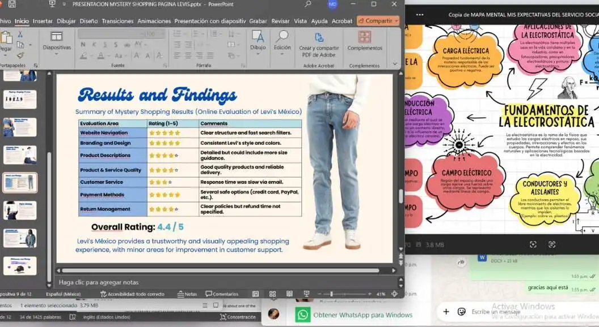
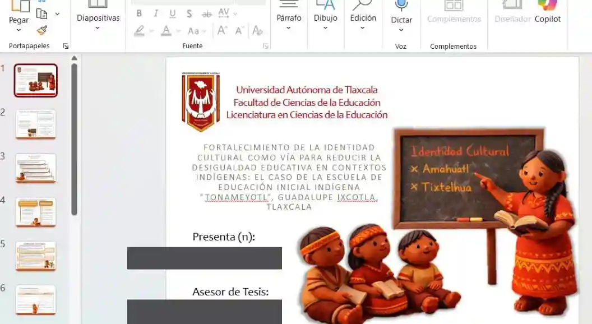
Trabajos realizados
Tesis, presentaciones, diseños, mapas, esquemas e investigaciones
Más ejemplos de entregas de presentaciones, diseños, documentos académicos, reportes, infografías, mapas conceptuales y otros trabajos realizados.
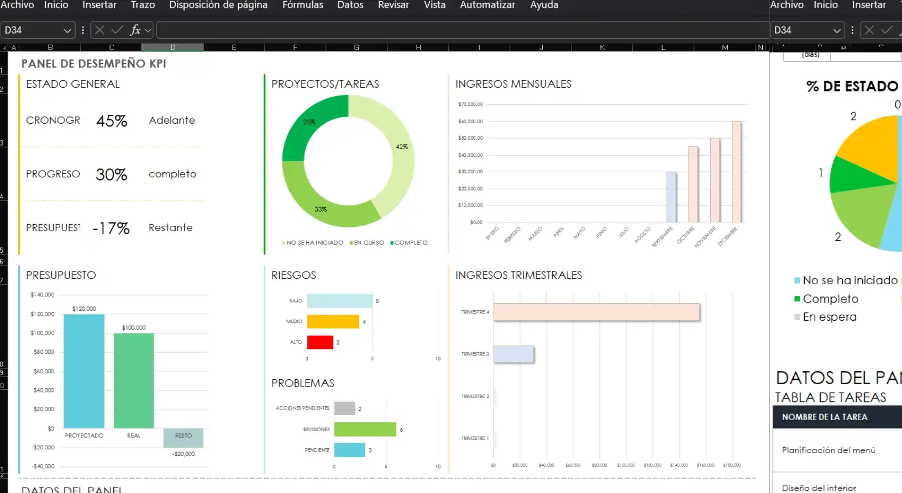
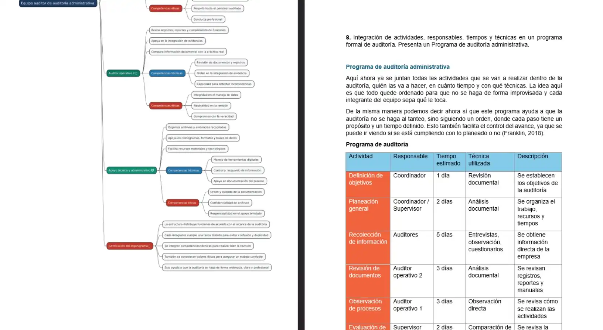
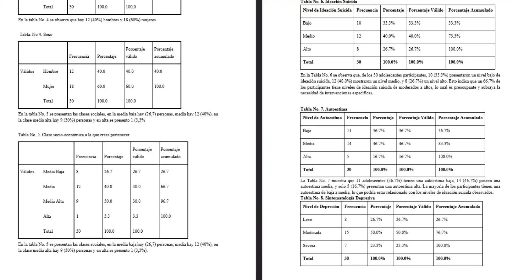
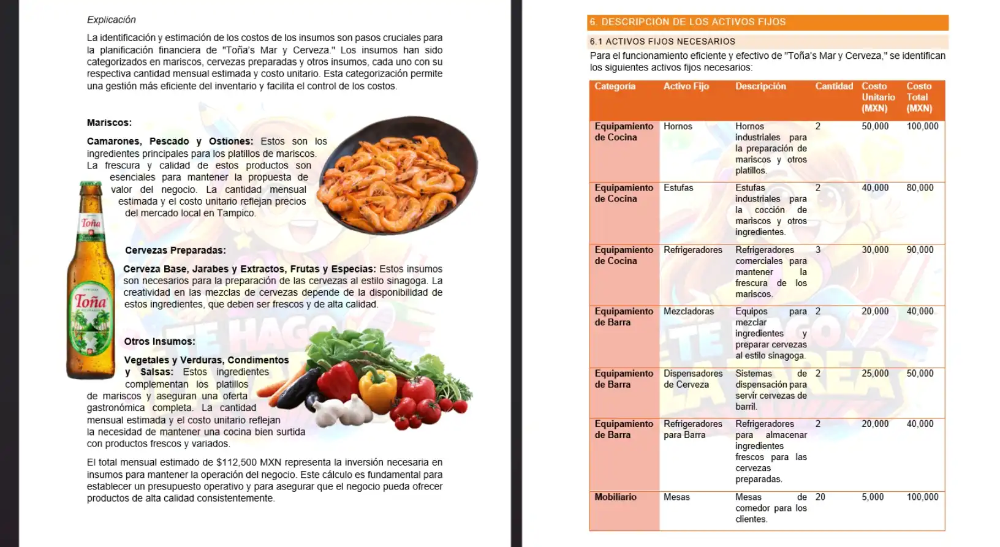

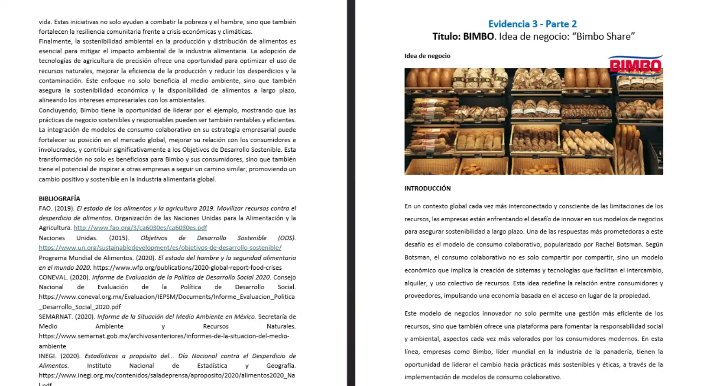
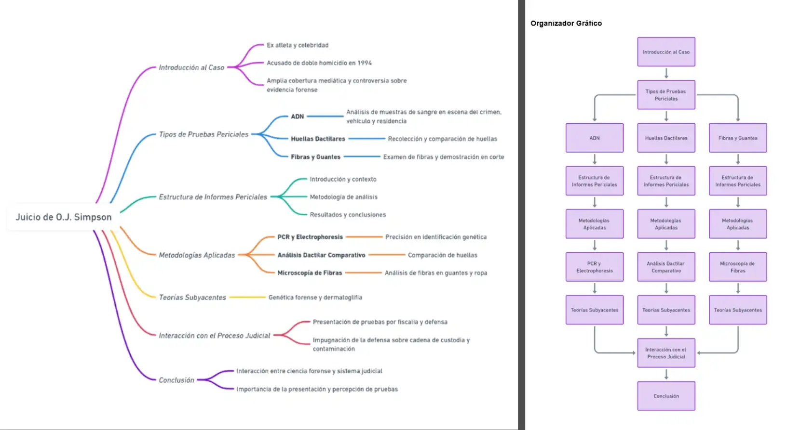
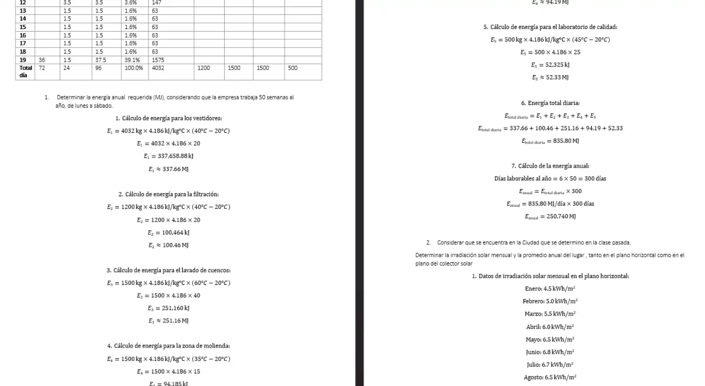
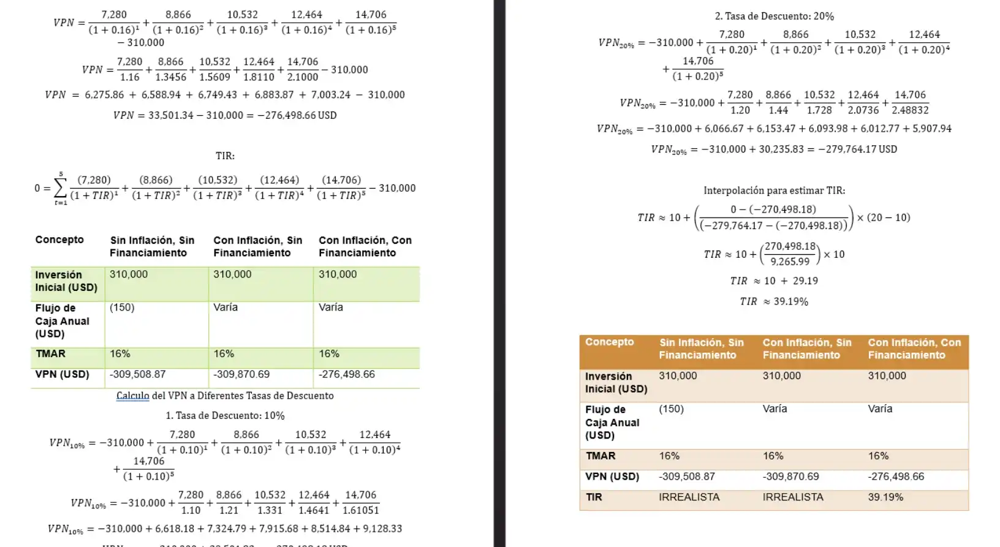
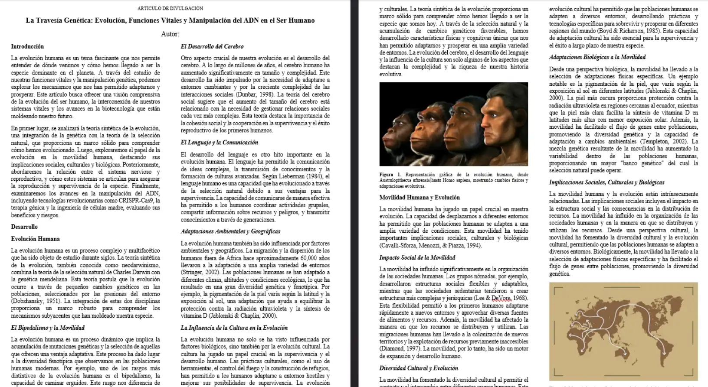
Opiniones
Lo que opinan nuestros clientes
Confianza y respaldo
Compromiso con la calidad y satisfacción
Cada actividad se trabaja con cuidado, atención a las instrucciones y enfoque en la calidad. Si llegara a existir algún problema importante con el trabajo entregado, revisamos el caso y, dependiendo de la situación, puede aplicarse solución o reembolso del 100%.
Hasta ahora nuestros clientes suelen quedar satisfechos y seguimos cuidando cada entrega para mantener esa confianza.
100%posible reembolso según revisión del caso
Contacto
Contáctame y revisamos tu actividad
Puedes enviarme mensaje por WhatsApp, correo o visitar mi página de Facebook.

+52 81 1671 8765
Enviar mensajeCorreo
daenna2001@gmail.com
Enviar correoTe Hago La Tarea By Daenna
Ir a Facebook
Formas de pago
Transferencia y PayPal
Se aceptan pagos por transferencia bancaria. Para pagos desde otro país también se acepta PayPal, considerando el 10% adicional correspondiente a comisión.
Los datos exactos de pago pueden compartirse al momento de confirmar el servicio. Atención desde Monterrey, Nuevo León.
Transferencia BBVA
Pagos internacionales
Servicio en México
Opciones de pago
- Transferencia bancaria
- PayPal para otros países
- 10% adicional en PayPal por comisión
Evidencias en PDF
Aquí puedes ver en PDF algunas de mis evidencias entregadas
Explora ejemplos tipo de trabajo. Da clic en cualquier portada para abrir el archivo y visualizarlo directamente en esta misma página.
Material visual
Infografías, esquemas, folletos, trípticos, mapas conceptuales y materiales gráficos elaborados para presentar información de forma clara, atractiva y bien organizada.
Presentaciones
Exposiciones y diapositivas preparadas para materias, proyectos, defensas, análisis y desarrollo de temas académicos.
Tesis, investigación académica y portafolios
Documentos académicos formales, avances de tesis, investigaciones y trabajos integradores desarrollados en distintas áreas del conocimiento.
Trabajos matemáticos y de cálculo
Resoluciones, ejercicios y análisis desarrollados en matemáticas, estadística, probabilidad, cálculo y procesamiento de datos.
Proyectos en Excel y otros softwares
Desarrollos técnicos realizados en Excel, simuladores, software estadístico, programación y herramientas de análisis aplicadas a distintos contextos.
¿Listo para pedir apoyo?
Envíame tu tarea, proyecto o tesis y te confirmo si puedo ayudarte
Escríbeme con tus instrucciones, fecha de entrega y material que tengas. Reviso tu actividad y te paso cotización sin compromiso.